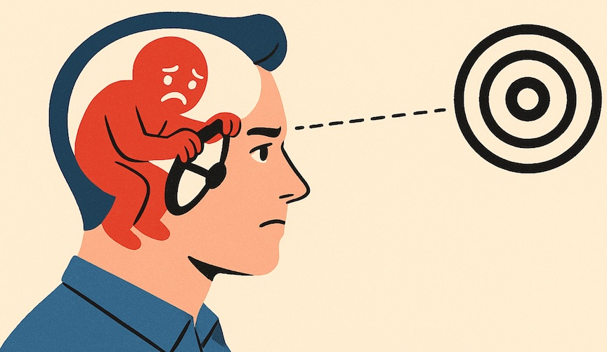

When Feelings Hijack Focus — And How to Get It Back
By Ali Zafer · Published on August 13, 2025

Have you ever had a stressful situation replay in your head over and over — long after it’s over? You’re not in danger anymore, yet your body and mind act as if you are. The key lies in the difference between reality and illusion — and in how well our brain can tell them apart.
Think of a Nightmare
You weren’t actually being chased by a crocodile, yet your heart races, you sweat, you jolt awake. Why? Because your brain couldn’t distinguish between the imagined threat and reality.
For adults, decades of experience help our prefrontal cortex — the brain’s logical control center — step in and say, “This isn’t real. Calm down.” But for teens, that logical system is still under construction. Their limbic system — the emotional brain — often drives the show.
Small Events, Big Reactions
For a teenager, a passing comment, a perceived slight from a friend, or a neutral glance from a teacher can feel huge. Why? Their brain is wired to react first and reason later — and sometimes much later.
Dr. Marwa Azab, in her article “Why Are Teens So Emotional?” in Psychology Today, explains:
Teens are highly emotional because of a hyperactive amygdala that generates many "danger" false alarms and slow, inefficient connections between the logical PFC and the emotional amygdala.
In other words, their “emotional accelerator” works better than their “logical brakes.”
Reality, Perception, and Growth
The skill we want them to build is separating what’s real from what feels real. That means:
- Pausing when emotions spike
- Observing feelings without reacting
- Engaging the logical brain to check for evidence
Every time they do this successfully, they strengthen the neural pathway between their emotional and logical centers. Over time, this “emotional muscle” makes them more resilient, focused, and less likely to get derailed by life’s inevitable bumps.
Our Role as Adults
As parents, educators, and mentors, our job isn’t to eliminate stress or shield teens from all emotional discomfort. It’s to guide them through it — to help them recognize when their brain is playing tricks, and to teach them how to steer themselves back to reality.
Why This Matters
Because whether the “danger” is a hungry bear… or a classmate’s neutral “hello,” the brain will react the same way if it hasn’t been trained otherwise.
When we give teens the tools to separate perception from reality, we don’t just help them in the moment — we equip them for life.
A Step Forward
This is one of the reasons I created Samawaat — to give students ages 12–18 the space, strategies, and practice to develop emotional intelligence alongside practical skills like communication, entrepreneurship, and financial literacy.
If you’re curious about how we do this, RSVP for an information session.